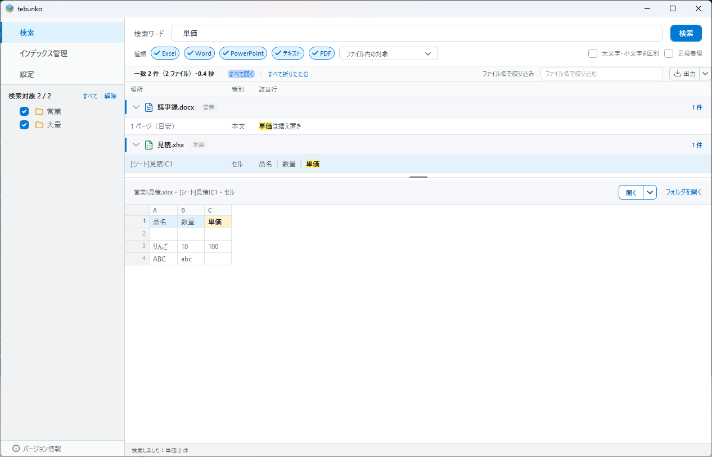

検索タブ¶
扱うこと: ［検索］タブでの検索の実行・検索ワードの扱い・結果の表・絞り込み・結果をファイルに出力。扱わないこと: 元のファイルを開く（元のファイルを開く）、選択行のプレビューとファイルごとの表示（選択行のプレビュー）、検索対象のツリー（検索対象のツリー）。先に読むページ: 画面、検索。
ワードを入れて検索し、結果を元のファイルごとの見出しで確かめ、元のファイルを開くタブ。左のツリーで検索するインデックス・フォルダを選ぶ。

今の画面の写真は画面設計（現行）にある。
| No. | 部品 | 仕様 |
|---|---|---|
| 1 | 検索ワード | 1 行の入力欄。1 ワードのみ。Enter で検索する |
| 2 | ［検索］ | 主ボタン。検索ワードが空、正規表現がオンで正規表現が正しくない、検索対象の本文インデックスのファイルが 0 件、または No.13 でチェックしたフォルダが無ければ無効。検索中は［中止］に変わる（検索の実行）。幅は 58 で固定し、インデックスが無い画面でも変えない |
| 3 | 検索条件 | 検索ワードの下の行。検索する種類のチップ（［Excel］［Word］［PowerPoint］［テキスト］［PDF］。既定はすべて選んでいる。チップの内側の左右の余白は 5 で、最小の幅でも 1 行目に収める）と、［ファイル内の対象 ▾］のメニュー（「共通」の下に、本文（常に対象）・［図形］・［コメント］。既定は図形・コメントもオン。既定から外すと、ボタンは「ファイル内の対象・N 件変更」になり、線が青くなる。ボタンの幅は 176 で固定し、文字は左・▾ は右端に置く）、［□ 大文字・小文字を区別］［□ 正規表現］。ここまでは 1 本の折り返す並び（ConditionsPanel）で、項目の間は 8、折り返した行の間も 8。順は 「種類」の文字・チップ 5 つ・［ファイル内の対象］・伸びる空き・［大文字・小文字を区別］・［正規表現］。広い幅では 1 行になり、空きが余りを取って、検索条件が右端に寄る。入りきらないときは後ろの項目から次の行の左端へ落ちる。折り返しの判断は getConditionFlow（search_bar_view.ps1）、幅の反映は updateConditionFlow（search_bar.ps1）。チップと［正規表現］は、オンでもオフでも幅と太さを変えない（チップの✓は、オフのときは見えなくして場所を残す。［正規表現］はオンで色だけが青になる）。サクラエディタの Grep の条件にならう（検索ワードの扱い）。正規表現がオンで、正規表現が正しくないワードは、入力欄の枠を赤くし、［正規表現］の下に吹き出しで 正規表現が正しくありません と出し（理由は書かない）、［検索］を押せなくする。式を直すか、正規表現をオフにすると消える。チップは押すたびに選びを切り替える（全部外してもよい。1 つも選んでいないと検索を始めず、種類のチップの下に吹き出しで 種類を 1 つ以上選んでください と知らせる。［検索］は押せるまま。チップを選ぶと消える。吹き出しの作りは下の「エラーの吹き出し」） |
| 4 | 検索対象の見出し | 左の欄の一番上に 検索対象 選んだ数 / インデックスの数（インデックスが無いときは 検索対象 だけ）。詳しい中身（検索対象：すべて（集約ファイル N 件 ・ 最終更新 M/d H:mm）、一部のときはチェックしたフォルダの先頭 3 か所など）はこの見出しのツールチップに出す。本文インデックスのファイルが 0 件なら、結果の表の場所に空の状態（フォルダの絵と［インデックス管理へ］）を出し |
| 5 | 件数 | 一致 N 件（M ファイル）・0.4 秒。検索中は 検索中… 該当 K 件（本文インデックスを数えている間は 検索対象のファイルを確認しています…（N 件））。上限を超えたときは、数えている間 検索中… 該当 10,000 件以上（総数を数えています：45,678 件）、数え終えたら 全 234,567 件中 10,000 件を表示（1,234 ファイル）・2.3 秒（10,000 件以上（総数は数えていません） は数えている間に中止・時間切れになったとき）。絞り込み中は 一致 N 件中 K 件を表示 |
| 6 | 絞り込み | 欄の左に ファイル名で絞り込み と出し、結果の中から元のファイル名の文字列で絞り込む（絞り込み）。検索し直さずに結果を絞れる |
| 7 | 結果の表 | 元のファイルごとの見出しと、その下のヒットした行（場所・種別・該当行）。検索した直後は見出しだけを出し、見出しのクリックで行を開く・閉じる（ファイルごとにまとめた表示）。一致箇所を黄色で強調する（結果の表） |
| 8 | 選択行 | 選択した行と、その前後の行を No.9 に表示する。ダブルクリック・Enter で元のファイルの該当箇所を開く（元のファイルを開く） |
| 9 | 選択行のプレビュー | 選択行とその前後の行を、シートのような表（行番号と列見出し A, B, C…）で表示する（最初は選択行の前後 50 行ずつ。縦にスクロールして見られる）。一致したセルを黄色で強調する。見出しの右の［開く］で元のファイルの該当箇所を開き、［フォルダを開く］でエクスプローラーを開く。セルをクリックして Ctrl+C で値をコピーでき、列見出しの右端のドラッグで列幅を変えられる。行を選んでいなくても枠は常に表示する（選択行のプレビュー） |
| 10 | ［出力 ▾］ | 表示中の結果を Excel ブック・CSV・TSV のファイルに出力する。本体を押すと最後に出力できた種類で、▾ を押すとメニューから選んだ種類で、そのまま出力する。書けたら出力したファイルを開く（Excel ブックは既定のアプリ、CSV・TSV はメモ帳）（結果をファイルに出力） |
| 11 | ステータス表示 | 検索しました：<ワード> N 件 など（画面に出すメッセージの一覧） |
| 13 | 検索対象のツリー | 画面の左側。インデックスの一覧（［インデックス管理］で作ったインデックス）と、その下のフォルダをチェック付きのツリーで表示し、チェックしたインデックス・フォルダだけを検索する（検索対象のツリー）。見出しの右に［すべて］［解除］を置く。元のフォルダが見つからないインデックスには赤い点を付ける。左右の境目はドラッグで幅を変えられる |
| 14 | ［すべて開く］［すべて折りたたむ］ | 件数の行の右（No.6 の左）。すべてのファイルの行を開く・閉じる（ファイルごとにまとめた表示） |
| 15 | ［開く］［▾］ | No.9 の見出しの右。［開く］で元のファイルを開く（行を選んでいないときは押せず、枠・仕切り・文字・▾ をすべて薄い灰色にする）。［▾］のメニューで 通常（編集する） / 新規（元のファイルを占有しない） / 読み取り専用 を選ぶと、その開き方で開き、既定にもする（既定は 通常（編集する）。元のファイルを開く） |
検索の実行¶
stateDiagram-v2
state "待ち" as Idle
state "検索中" as Searching
state "結果あり" as Done
[*] --> Idle
Idle --> Searching : ［検索］
Searching --> Done : 完了（上限を超えても総数まで数える）
Searching --> Idle : ［中止］（Esc）
Done --> Searching : ［検索］（新しい要求）- 検索処理は
tebunko/search/content_index_search.ps1の関数（getContentIndexFiles/searchContentIndex、実装構成）で行う。対象・照合・速度の仕様は 検索 のとおり。 - 検索対象は No.13 のツリーでチェックしたインデックス・フォルダ配下の
*.tsv（検索対象のツリー）。結果のフォルダ（相対パス）は、選んだフォルダではなくインデックスのフォルダ（work\store\content）から求めるため、フォルダを絞っても結果の表示・元のファイルを開く動作は変わらない。 - 検索の司令のスレッド（
SearchService）で実行し、検索中も画面を操作できるようにする。司令のスレッドと照合のプールは画面を開いている間使い回し、検索のたびに作らない（寿命）。検索 1 回は要求（newSearchRequest）として渡し、新しい検索を始めると前の検索は取り消す（要求のStop）。 - 文字どおりに探すときで、2-gram の索引が使えるとき（2-gram の索引）は、検索語の 2-gram をすべて含むファイルだけを照合する。正規表現のとき・索引が無いとき・作りかけのときは、すべてのファイルを照合する（結果は同じ）。
- 本文インデックスを約 16MB ずつ検索し（検索を速くする仕組み）、そのたびに進捗（No.5 のバーと
検索中… 該当 K 件、タスクバーのアイコン）を更新する。結果は 0.1 秒ごとに表へ移し、見つかったファイルの見出しから順に表示する（ファイルごとにまとめた表示）。 - 検索中は［検索］が［中止］に変わる（Esc でも中止）。中止した場合は、それまでの結果を残し、
中止しました（N 件まで表示）と表示する。 - 件数の上限：既定は 10,000 件で、［設定］タブの「検索結果」で、1,000〜100,000 件か制限なし（
searchLimitが 0）に変えられる（決めたこと U3。確定すると次の検索から効く。検索の途中の分は変わらない）。制限なしのときは、下の文言も出ない。上限を超えても検索は最後まで続け、表に入れるのは先頭の上限の件数だけにして、総数（HitTotal）まで数える。数えている間は、要約欄に検索中… 該当 10,000 件以上（総数を数えています：45,678 件）と出し、進み具合のバーも進める（［中止］を押すと、数えるのをやめる。表は残す）。数え終えたら、要約欄は全 234,567 件中 10,000 件を表示（1,234 ファイル）・2.3 秒、ステータスは検索しました：<ワード>（全 234,567 件のうち、先頭の 10,000 件を表示）。フォルダ・ファイル名の順に先頭から表示しています。ワード・対象ファイル・検索対象で絞り込んでください。と表示する（絞り込みを消したときの要約欄も、秒を除いてこの形に戻す）。数えている間に中止したときは中止しました（先頭の 10,000 件を表示。総数は数えていません）、正規表現の照合が時間切れになったときは正規表現の照合に時間がかかりすぎるため、総数を数えられませんでした（先頭の 10,000 件を表示）。正規表現を見直してください。と表示する（要約欄は該当 10,000 件以上（総数は数えていません）（1,234 ファイル）・2.3 秒）。文言と出し分けはresult_list_view.ps1のgetSearchCountingText・getSearchFinishSummaryText・getSearchFinishStatusText。 - フォルダの順・本文インデックスのファイルの名前（拡張子・番号）の順・本文インデックスのファイルの中の順に検索するため、表に出るのは先頭の上限の件数で、後ろのファイルのヒットは表に出ない（件数の多い順などで選ばれるわけではない）。利用者が「全部出ている」と誤解しないよう、メッセージで総数と先頭から表示していることを伝える。
- 更新中でも検索できる。その場合、ステータスに
更新中のため、更新の途中のインデックスを検索しています。と表示する（U4）。
検索ワードの扱い¶
flowchart TD
W["ワードを入力"] --> R{"［正規表現］がオン？"}
R -- オフ --> E["newSearchRegex でエスケープ<br>文字どおり検索"]
R -- オン --> V{"regex::new が成功？"}
V -- はい --> Rx["正規表現として検索"]
V -- いいえ --> E2["吹き出しを表示し、検索を始めない"]| 項目 | 仕様 |
|---|---|
| ワード数 | 1 つ。入力欄は 1 行。前後の空白は取り除く |
| 正規表現オフ（既定） | 文字どおりに検索する（newSearchRegex でワードをエスケープする）。(株) 1.5 C++ などもそのまま探せる |
| 正規表現オン | 正規表現として検索する。[regex]::new() が失敗するワードは、［正規表現］の下に吹き出しで 正規表現が正しくありません と表示し（理由は書かない）、検索を始めない（検索 検索仕様） |
| 大文字・小文字を区別 | オンなら英字の大文字と小文字を区別する（既定は区別しない） |
| 図形も検索・コメントも検索 | オフにすると、図形（場所 <元の場所>[図形]。Word・PowerPoint に埋め込んだ Office のファイルの中の文字 <元の場所>[埋め込みN] も、図形と一緒に外れる）・コメント（場所 <元の場所>[コメント]）を検索しない（既定はどちらもオン）。本文（セルの値・段落）だけを探したいときに使う。Excel・Word・PowerPoint で共通（PowerPoint のテキストボックス・図形の文字はスライドの本文なので、オフにしても検索する） |
| 種類 | 検索するファイルの種類を、チップ（Excel・Word・PowerPoint・テキスト・PDF）で選ぶ（既定はすべて）。選んだ種類の拡張子のファイルだけを検索する（newFileKindFilter）。ファイル名での絞り込みは、検索後の［絞り込み］（No.6）で行う。種類を 1 つも選んでいなければ検索を始めず、種類のチップの下に吹き出しを出す（getSearchKindBalloonText。選びは保存しない＝前に保存した選びのまま、設定ファイルの形は変えない）。選んだ種類に合うファイルが検索の対象に無ければ No.5 に 種類（Word・テキスト）に合うファイルがありません。 と表示する |
| 一致箇所の強調 | 結果の表・プレビューの強調には、検索と同じ正規表現（newSearchRegex）を使う。このため、大文字と小文字の区別も強調に反映される |
| 条件の表示 | 既定から変えた条件があれば、ステータスを 検索しました：<ワード> N 件 条件：大文字・小文字を区別・種類：Excel・テキスト とする（図形・コメントをオフにしたときは 図形を除く コメントを除く）。0 件のときも同じ形（検索しました：<ワード> 0 件）で、No.5 には 一致する結果はありません を出す（メッセージ） |
| 設定の保存 | 各条件は setting.config の useRegex / caseSensitive / fileKinds / includeShapes / includeComments に保存し、次回も引き継ぐ（画面での読み書き）。チェックボックス・チップは、クリックしたときに保存する |
正規表現を既定オフにするのは、業務文書によく出る表記が意図しない結果になるためである。
| 入力 | 利用者の意図 | 正規表現として検索した場合 |
|---|---|---|
(株) |
「(株)」を探す | ( ) がグループとみなされ、「株」を含む行すべてにヒットする |
1.5 |
「1.5」を探す | . が任意の 1 文字とみなされ、「105」「1-5」にもヒットする |
C++ |
「C++」を探す | 正規表現が正しくないので、吹き出しが出て検索できない |
エラーの吹き出し¶
検索のエラー（種類を 1 つも選んでいない・正規表現が正しくない）は、検索バーの高さ（86）を変えずに、結果の一覧に重ねる吹き出しで出す。検索を始めず、前の結果と件数はそのまま残す。
| エラー | 吹き出し | 位置 | ［検索］ | 消えるとき |
|---|---|---|---|---|
| 種類を 1 つも選んでいない（［検索］を押したとき） | 種類を 1 つ以上選んでください（SearchKindBalloon） |
種類のチップの下 5。左端はチップの左端 | 押せる | 種類を選んだとき |
| 正規表現が正しくない | 正規表現が正しくありません（RegexBalloon） |
［正規表現］の下 5。左端はチェックボックスの左端（右端が窓からはみ出すときは左へ寄る。下の説明） | 押せない | 式を直したとき・正規表現をオフにしたとき |
- 形は、白地・赤い線 1・角丸 4・影（黒 16%・下に 2・ぼかし 8）で、中は赤いアイコンと赤い文字。マウスの操作は受けない（
IsHitTestVisible=False）。出したとき、画面の読み上げにも知らせる（LiveRegionChanged）。 - 正規表現が正しくないとき、検索ワードの欄の枠も赤くする（
WordErrorRing）。 - 広い幅では、正規表現の吹き出しは右側の「ファイル名で絞り込み」の欄に重なる（操作は通る。吹き出しはマウスを受けない）。正規表現の吹き出しは、最小の幅では右端が窓に収まるまで左へ寄る（左端は［正規表現］より左になる）。吹き出しを出し入れしても、位置は変わらない（
tests/gui/search_bar.Tests.ps1）。 - 作りは、検索バーの中の高さ 0 の
Canvas（BalloonLayer）に置き、search.xamlで検索バーを結果の一覧より前に出して重ねる（Popupは別のウィンドウで、画面の読み上げ・自動操作から外れやすく、Adornerは置き場の層が増えるため使わない）。位置はplaceSearchBalloon（search_bar.ps1）が決める。置き直すのは、吹き出しを出したときと、検索条件の並びを決め直したとき（updateConditionFlow）。右端からはみ出すときはgetBalloonLeft（search_bar_view.ps1）で左へ寄せる。文言と可否の判断はgetSearchKindBalloonText・getWordNotice・newSearchButtonState（search_bar_view.ps1）。
結果の表¶
| 列 | 内容 | 例 |
|---|---|---|
| 場所 | 行ごとの場所の表記（describeHitPlace）。Excel は場所ごとの表記にセル番地を足し（[シート]売上!B12。1 行の中で複数のセルが一致したときは、ほかの数を ほか N で付ける。セル番地が求まらないときは [シート]売上 12 行目）、図形・コメントは図形の左上・コメントのセルを足す（[シート]売上!D5。求まらないときは通し番号のため行番号を出さず [シート]売上）、ヘッダー・フッターは行にセル番地が無いため [シート]売上 だけを出す。Word・PowerPoint は場所ごとの表記のまま（describePlace。検索 出力フォーマット。種類の見出しは付けない）。Word のページは目安のため「（目安）」を付ける。幅より長いときはツールチップで全文を出す。並べ替えは TSV の名前（Location。ページ003 のように桁をそろえてある）→ 行番号の順で行う |
[シート]売上!B12 / [シート]売上!B12 ほか 2 / [シート]売上!D5 / 3 ページ（目安） / スライド 2（非表示） |
| 種別 | 行の中身の種類。Excel はセル・図形・コメント・ヘッダー・フッター、Word・PowerPoint は本文・ノート。図形・コメントは、検索条件の［図形］［コメント］と同じ言葉（ヘッダー・フッターに選択肢は無く、いつも検索する） | セル / 図形 / コメント / ヘッダー・フッター / 本文 / ノート |
| 該当行 | インデックスの 1 行（元の TSV の 1 行）。セルの区切り（タブ）は │ で表示する。Excel の図形・コメントの行（場所 <シート名>[図形] 等）は、先頭のセル番地を「場所」列に出すため除き、囲みの " を外した文字だけを出す（例: 納期は↵別途ご相談。HitRow.ShownText）。セル番地だけの一致は検索でヒットにしないため、強調は文字の部分に出る。ただし、書き出しの形（囲みの "・""・区切りのタブを見る後読み）にだけ当たる一致は、ヒットになっても、画面は囲みを外して出すので強調が出ないことがある。ヘッダー・フッターの行（場所 <シート名>[ヘッダー・フッター]）は文字だけの行なので、そのまま囲みの " だけを外して出す。プレビューの列の見出しは 文字 1 つ。一致箇所は黄色の背景・太字で強調する（正規表現オンのときは一致した範囲） |
見積先： │ (株)山田商事 │ 担当：佐藤 |
- 列は場所・種別・該当行の 3 つ。インデックス・フォルダ・ファイル名は、ファイルごとの見出し（ファイルごとにまとめた表示）に出すため、行には出さない（これらの列での並べ替えも無い）。Word の段落番号・表のセル、PowerPoint の図形の番号は、インデックスに記録していないため出さない。
- 表示順は既定でパス順（検索 検索仕様 の検索順）。列見出しのクリックで並べ替える（もう一度で逆順。ファイルの中の行を並べ替え、ファイルの順もそれに合わせる。ファイルごとにまとめた表示）。
- 列幅は変えられる。該当行が長いときは末尾を
…で省略し、ツールチップに全文を出す。 - 表に外枠は付けない（線は行の区切りと列見出しの下だけ）。
- 複数行を選択できる（Shift / Ctrl＋クリック）。
- 行・ファイルの見出しを右クリックすると、その行を選んでメニューを出す（行の無い所では出さない）。並びは ファイルを開く、共通の決まりは 右クリックのメニュー。
- Excel のセル内改行（インデックス作成時にマーカーへ置き換えたもの。Excel の TSV 整形仕様）は
↵で表示する。
絞り込み¶
- 入力のたびに（0.3 秒待ってから）、元のファイル名（拡張子を含む。フォルダは含まない）への部分一致（大文字・小文字を区別しない）で絞り込む（
HitRow.MatchesFileName）。フォルダ・場所・種別・該当行・行番号は対象にしない（フォルダは検索対象、本文は検索ワードで絞る）。ファイル名はファイルごとに同じなので、合うファイルの行はすべて残り、合わないファイルは見出しごと消える。 - 絞り込み中は No.5 に
一致 N 件中 K 件を表示と表示する。入力欄を空にすると解除する。 - 結果の表とプレビューの境目は、結果が少なくて表が内容の高さに収まるとき（見出しと行が 40 項目以内）は、表を内容の高さまで縮めてプレビューを広げる（
getPreviewRowHeight・updateResultPaneHeight）。表がいっぱいになるときと、行がまだ無いとき（起動直後・検索前・0 件）は、プレビューを既定の高さ（180。最小 120）にして、結果の側を大きく保つ。高さは保存しない（起動のたびに既定から始まる）。境目をドラッグしている間は、ドラッグを始めた時点から高さを書き戻さない（1 回目のドラッグでもマウスに付いて動く）。動かして離したら、その高さを優先して自動では変えない（クリックしただけでは止めない）。 - 新しく検索すると絞り込みは解除する。
結果をファイルに出力¶
- ボタンは分割ボタン［出力 ▾］（本体
ExportButtonと ▾ExportMenuButtonを 1 つの枠にまとめる。高さ 24・角丸 4・枠は入力欄と同じ色・地なし・文字 11。青は hover のときだけ）。本体を押すと、最後に出力できた種類（初めは Excel ブック）で出力する。▾ のメニューにはExcel ブック (.xlsx)・CSV (.csv)・TSV (.tsv)があり、項目を選ぶと、その形式でそのまま出力する（印は付けない。選んで書けた種類が、次の本体の［出力］の形式になる。画面を開くたびに Excel ブックに戻る。setting.configには残さない）。検索する前に出力しようとしても、出力せず、先に検索してください。と表示する。 - 出力先は、保存のダイアログを出さず、作業フォルダの一時の置き場に決める（
newExportTarget）。work/tmp/<PC の鍵>/open_copy/<12 桁の文字>/検索結果_<ワード>_<日時>.<拡張子>で、1 回ごとに別のフォルダなので、同じ名前が重ならない（開いたままのファイルがあっても上書きしない）。置き場は［新規で開く］のコピーと同じで、起動のたびに、最後に使ってから 1 日より古いものだけを消す（clearOldOpenCopies。開いているものは残る）。出力先を決めるときは、ファイルに触らない（フォルダは書く側の司令のスレッドが作る）。 - ほかの場所に残したいときは、開いたアプリ（Excel など）で［名前を付けて保存］する。
- 表示中の結果（絞り込み後。閉じているファイルの行も含む）を書く。件数の上限を超えて表に入らなかった分（検索の実行で一時ファイルに溜めた溢れ）も書く。表の分に続けて溢れを検索の順に書き、絞り込み中は溢れの分も同じ絞り込み（
testHitFilter）にかける。書く処理は検索の司令のスレッド（SearchService.Export）が行い、画面のスレッドは 200 ミリ秒ごとに進み具合を見るだけにする（tebunko/search/search_export.ps1）。 - 溢れを書いた出力では、並べ替えは当てず、検索の順で書く（並べ替え中なら、ステータスにそう添える）。
- 書いている間、ボタンは本体だけの
出力を中止になり、▾ は隠れる。押すと中止する。中止・失敗のときは、書きかけの一時ファイル（.new）を消す。 - 検索の途中で押したときは、検索が終わってから書く（もう一度押すと取り消す）。新しく検索したときと、検索結果を消したときは、出力も止める。
- 溢れが使えないとき（総数を数える時間切れ・溢れを書けなかった・検索を途中で止めた）は、表に出ている分だけを書き、ステータスにその理由を添える。
- 形式は 検索結果ファイル のとおり。Excel ブックは 5 列（ファイル名・場所・種別・行・該当行）、CSV・TSV は該当行をタブで列に分ける。Excel ブックは 1 シート 1,048,576 行（見出しを含む）までで、超えた分は書かず、ステータスに件数を添える。セルは 32,767 文字までで、超えた分は切る。出力は
tebunko/search/search_export.ps1のinvokeSearchExportが司令のスレッドで行う（Excel ブックはshared/office/xlsx_writer.ps1、CSV・TSV はshared/core/csv_writer.ps1。1 行の組み立てはsearch_run.ps1のtoResultCells。実装構成）。書き終えたら、出力したファイルを開く（openExportedFile。Excel ブックは既定のアプリ（Excel）、CSV・TSV は数式を解釈しないメモ帳（openWithNotepad）。CSV・TSV を表計算アプリで自動では開かない: 先頭が=・+・-・@のセルが数式として動くのを避けるため、値は加工せずに開き方で避ける。開けなければ、ステータスに出力先のパスを添える）。 - 絞り込み中は、見出しの件数を表示中の件数とし、ステータスに
絞り込み後の K 件を <名前> に出力しましたと表示する（U7）。 - 書き込めないときは、検索画面の上の橙の帯に出す（閉じられる。帯とステータスバー）。ファイルが開かれているときは
<名前> に書き込めません。開いているアプリを閉じてから、もう一度出力してください。、読み取り専用・権限が無いときは<名前> に書き込む権限がありません（読み取り専用など）。<パス> を確かめてから、もう一度出力してください。。 - まだ検索していなければ
先に検索してください。と表示する。 - 出力の文言は メッセージ の「ステータス・帯」の結果を出力した行にまとめた（
open_source_view.ps1のgetExport*Text）。